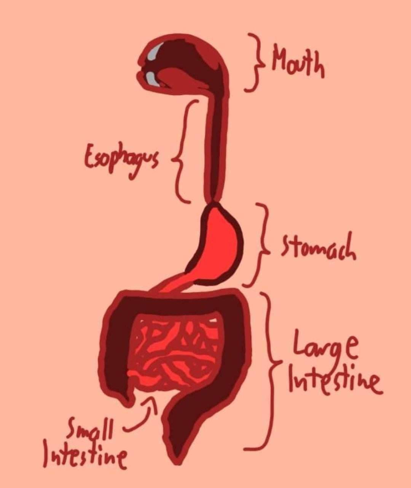

Digestive System
| What is it? | What is its purpose? |
|---|---|
| The digestive system is a series of organs mainly located inside the abdominal cavity. It extends all the way through the body from the head to the pelvis. The main organs consists of the mouth, esophagus, stomach, and the intestines, but many more organs not here aid in the functions of the digestive system. These main organs are also called the (GI) gastrointestinal track. | The digestive system's main use is for breaking down food, absorbing nutrients, and eliminating any waste products. It does this by using its different organs with different uses. The mouth and stomach break down the food, the esophagus and intestines serve as transport, with the intestines also for absorption. |
Parts of the Digestive System
Mouth
The digestive system starts at the mouth. The mouth is an area that includes the teeth, tongue, and salivating glands. This is where mechanical and chemical digestion take place. The teeth break down the food into smaller parts, and the saliva moistens and breaks down starches in your food into a form easier for absorption.
Esophagus
The esophagus is a long muscluar tube or pipe that extends from the pharynx, past the respiratory system and the chest cavity, to the stomach in the abdominal cavity. Its purpose is to carry food that you chew and carry it to the stomach through a process called peristalsis, which consists of wave-like muscle contractions in your esophagus to push food down. This motion helps the esophagus transport food to your stomach even if your body is upside down. When the esophagus isn't transporting food, it is usually closed up to prevent the contents of your stomach from going up.
Stomach
The stomach is the main digestive organ that breaks down food. It does this through chemical digestion using gastric acid. This gastric acid is of course very acidic, so the stomach has something called the stomach lining to prevent this acid from bursting. At this point, the digested food is now called chyme, about to travel to the small intestine.
Small Intestine
The small intestine is one of the two intestines, which is responsible for breaking down food and absorbing nutrients. Being the longest part of your digestive system, this is where most of the digestion ttakes place. It receives food from the stomach and after processing it for a long time, sends it to the large intestines. The small intestine is made up of 3 parts, the duodenum, jejunum, and ileum. The duodenum is the first part of the small intestines, and is a mainly descending "chute" that curves around the pancreas. The jejenum is the next part of the small intestines, it coils around and around in the lower part of your abdominal cavity, filling up less than half of this space. Finally the ileum, which is the longest and final part of your small intestines. The walls of your intestines start to thin here, as this is where the most of the water and nutrients of the food is absorbed.
Large Intestine
The large intestine, also known as the colon, is the penultimate organ of the digestive system. It is wider than the small intestine, although it is also shorter. Its main function is to absorb water out of the food. After water has been sufficiently depleted, the large intestine transports the food to the anus to be excreted.
References:
- Digestive System: Function, Organs & Anatomy. (n.d.). Cleveland Clinic. https://my.clevelandclinic.org/health/body/7041-digestive-system
- Your Digestive System & How it Works. (2022, August 29). National Institute of Diabetes and Digestive and Kidney Diseases. https://www.niddk.nih.gov/health-information/digestive-diseases/digestive-system-how-it-works